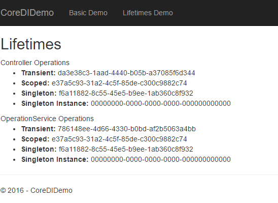
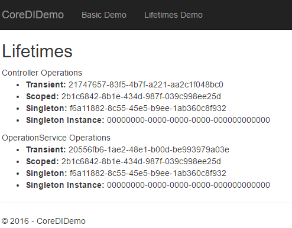

Before we can talk about how injection is done in practice, it is critical to understand what is service lifetime. When a component requests another component through dependency injection, whether the instance it receives is unique to that instance of the component or not depends on the lifetime. Setting the lifetime thus decides how many times a component is instantiated, and if a component is shared.
We have 3 options for this:
Transient – Created every time they are requested
Scoped – Created once per scope. Most of the time, scope refers to a web request. But this can also be used for any unit of work, such as the execution of an Azure Function.
Singleton – Created only for the first request. If a particular instance is specified at registration time, this instance will be provided to all consumers of the registration type.
The first screenshot is when we first load the page.
The second screenshot is of the same page after doing a refresh:
